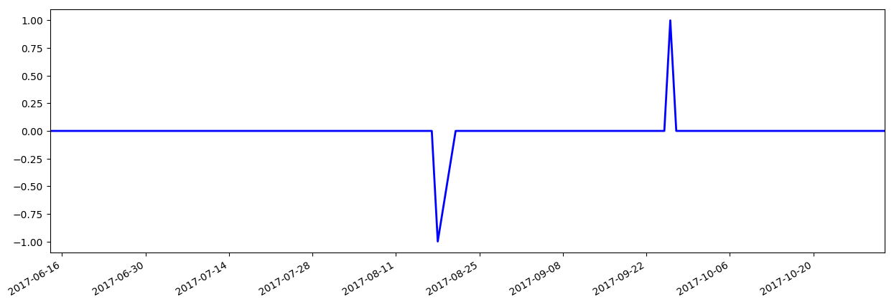

Основные фин.показатели:
| Баланс (квартал), в млн.USD | На 2017-06-30 | На 2017-03-31 | На 2016-12-31 | На 2016-09-30 | На 2016-06-30 |
|---|---|---|---|---|---|
| Всего текущих активов | 788.48 | 708.01 | 646.55 | 635.72 | 573.52 |
| Недвижимость/Имущество/Оборудование Всего | - | - | - | - | - |
| Всего активов | 1,079.38 | 986.99 | 925.81 | 909.20 | 843.89 |
| Общий долгосрочный долг | 25.03 | 25.04 | 25.05 | 33.06 | 40.09 |
| Всего обязательств | 159.68 | 151.88 | 144.40 | 159.09 | 134.92 |
| Общий капитал | 919.71 | 835.10 | 781.41 | 750.11 | 708.97 |
| Cash-flow (квартал), в млн.USD | 6 мес. 2017-06-30 | 3 мес. 2017-03-31 | 12 мес. 2016-12-31 | 9 мес. 2016-09-30 | |
| Поступления от операционной деятельности | 59.10 | 31.23 | 164.82 | 111.17 | |
| Поступления от инвестиционной деятельности | -17.57 | -5.64 | -9.32 | 3.11 | |
| Поступления от финансовой деятельности | 34.13 | 7.88 | 10.47 | 16.40 | |
| Чистый остаток денежных средств | 81.48 | 36.39 | 162.58 | 131.18 | |
| Доходы (квартал), в млн.USD | 3 мес. 2017-06-30 | 3 мес. 2017-03-31 | 3 мес. 2016-12-31 | 3 мес. 2016-09-30 | 3 мес. 2016-06-30 |
| Общий доход | 348.98 | 324.65 | 313.52 | 298.29 | 283.83 |
| Общие эксплуатационные расходы | 308.30 | 293.69 | 276.14 | 264.39 | 251.75 |
| Операционный доход | 40.68 | 30.97 | 37.38 | 33.90 | 32.08 |
| Чистая прибыль | 37.36 | 23.64 | 24.76 | 26.17 | 24.43 |
| Пониженная прибыли на акцию (EPS) без ЧС | 0.68 | 0.44 | 0.46 | 0.49 | 0.46 |
Последние финансовые новости: Показать все
| Дата | Заголовок | Источник |
|---|---|---|
| 2017-10-29 10:03 | 30 500 акций в EPAM Systems, Inc. (EPAM), приобретенных Банком Новой Шотландии | dispatchtribunal |
| Банк Новой Шотландии купил новую долю в EPAM Systems, Inc. (NYSE: EPAM) во втором квартале, согласно данным компании в своей последней заявке 13F в Комиссию по ценным бумагам и биржам (SEC). Инкорпорированный инвестор купил 30 500 акций поставщика услуг информационных технологий стоимостью около 2 655 000 долларов. Банк Новой Шотландии владел приблизительно 0,06% EPAM Systems по состоянию на самую последнюю заявку SEC. Несколько других институциональных инвесторов и хедж-фондов также добавили или уменьшили свои доли в компании. Alps Advisors Inc. подняла свои доли в акциях EPAM Systems на 0,3% во втором квартале. Alps Advisors Inc. теперь владеет 6 528 акциями акций поставщика услуг информационных технологий на сумму 549 000 долларов США после покупки еще 17 акций в последнем квартале. Группа «Ренессанс Групп» подняла свои доли в акциях EPAM Systems на 0,6% во втором квартале. В настоящее время ООО «Ренессанс Груп» владеет 3 819 акциями акций поставщика услуг информационных технологий на сумму 321 000 долларов США после покупки еще 21 акции в последнем квартале. Д.А. Davidson & CO. Поднял свои запасы в акциях EPAM Systems на 0,9% во втором квартале. Д.А. Davidson & CO. Теперь владеет 4 361 пакетом акций поставщика услуг информационных технологий на сумму 366 000 долларов США после покупки дополнительных 39 акций в последнем квартале. Los Angeles Capital Management & Equity Research Inc. увеличила свою долю в акциях EPAM Systems на 1,1% во втором квартале. Los Angeles Capital Management & Equity Research Inc. теперь владеет 6 624 акциями акций поставщика услуг информационных технологий на сумму 557 000 долларов США после приобретения еще 70 акций в течение последнего квартала. Наконец, CS Mckee LP увеличила свою долю в акциях EPAM Systems на 0,6% во втором квартале. CS Mckee LP теперь владеет 17 850 акциями акций поставщика услуг информационных технологий на сумму 1 500 000 долларов США после приобретения дополнительных 100 акций в течение последнего квартала. Институциональные инвесторы владеют 87,86% акций компании. В смежных новостях генеральный директор Аркадий Добкин продал 25 100 акций компании в сделке с понедельника, 14 августа. Акции были проданы по средней цене 80,49 долл. США на общую сумму 2 020 299,00 долл. США. Продажа была раскрыта в документе, поданном в SEC, который доступен через веб-сайт SEC. Кроме того, SVP Elaina Shekhter продала 500 акций компании в сделке с четверга, 5 октября. Акции были проданы по средней цене 90,00 долларов США, общая сумма сделки составила 45 000,00 долларов США. Раскрытие этой продажи можно найти здесь. В последнем квартале инсайдеры продали 273 000 акций компании на сумму 22 992 195 долларов США. 6.17% акций принадлежит инсайдерам компании. УВЕДОМЛЕНИЕ о НАРУШЕНИИ ТОРГОВЫХ ЗНАКОВ: Эта новостная новость была представлена Трибуналом по рассылке и является собственностью Трибунала по рассылке. Если вы читаете эту новость в другой публикации, она была незаконно украдена и переиздана с нарушением закона США об авторских правах и товарных знаках. Верную версию этой новости можно просмотреть на странице https://www.dispatchtribunal.com/2017/10/29/30500-shares-in-epam-systems-inc-epam-acquired-by-bank-of-nova -scotia.html. EPAM был темой ряда исследовательских отчетов. KeyCorp подтвердил рейтинг «покупать» акции EPAM Systems в исследовательской записке в пятницу, 20 октября. Barclays PLC понизила свою целевую цену по акциям EPAM Systems с 92,00 до 91,00 долларов США и установила рейтинг «лишнего веса» на акции в отчете об исследовании в пятницу, 4 августа. BidaskClub понизил доли EPAM Systems в рейтинге «купить» до «удерживаемого» рейтинга в отчете по исследованиям в понедельник, 31 июля. Zacks Investment Research подняла акции EPAM Systems с рейтингом «hold» до «buy» и установила целевую цену в $ 99,00 на акции в исследовании, опубликованном во вторник, 3 октября. Наконец, UBS AG повысила свою целевую цену по акциям EPAM Systems с $ 89,00 до $ 96,00 и дала компании рейтинг «покупать» в отчете в пятницу, 4 августа. Один инвестиционный аналитик оценил акции с рейтингом холдинга, а 14 из них выпустили рейтинг покупки акций компании. В настоящее время компания имеет консенсус-рейтинг «Покупать» и среднюю цену в $ 93,14. EPAM Systems, Inc. (NYSE EPAM) торговалась на 0,68% во время полуденной торговли в пятницу, достигнув $ 90,95. 235 757 акций компании торговали руками. Компания имеет рыночную капитализацию в размере 4,78 млрд. Долл. США, соотношение цены и прибыли 43,92 и бета 0,99. EPAM Systems, Inc. имеет 12-месячный минимум в 54,53 доллара США и 12-месячный максимум в 91,97 доллара. 50-дневная скользящая средняя цена акций составляет 87,78 долларов США, а ее средняя цена за 200 дней составляет 83,40 доллара США. EPAM Systems (NYSE: EPAM) в последний раз объявила о своих квартальных доходах в четверг, 3 августа. Поставщик услуг в области информационных технологий сообщил о 0,80 долл. США за квартал, опередив консенсус-прогноз Закса в размере 0,62 долл. США на 0,18 долл. США. EPAM Systems имела чистую маржу в размере 8,71%, а рентабельность собственного капитала - 15,12%. Доход компании составил 348,98 млн долларов за квартал, по сравнению с аналитическими оценками в 342,00 млн долларов. За тот же квартал в предыдущем году бизнес заработал 0,71 доллара США. Ежеквартальный доход EPAM Systems вырос на 23,0% по сравнению с аналогичным периодом прошлого года. В среднем аналитики по акциям прогнозируют, что EPAM Systems, Inc. опубликует 3,34 доллара США за текущий год. Профиль компании EPAM Systems EPAM Systems, Inc является поставщиком программных продуктов и услуг по разработке цифровой платформы для клиентов, расположенных в основном в Северной Америке, Европе, Азии и Австралии. Сервисные предложения Компании охватывают весь жизненный цикл разработки программного продукта от разработки цифровой стратегии и клиентского опыта до внедрения приложений и программных приложений для корпоративных приложений, а также от комплексных услуг по разработке программного обеспечения для обслуживания, поддержки, разработки пользовательских приложений, тестирования приложений и управления инфраструктурой. Количество просмотров: тип = F & ID = 2737475 | ||
| 2017-10-26 16:32 | Аналитики пилирования слоев на EPAM Systems, Inc. (NYSE: EPAM) | concordregister |
| EPAM Systems, Inc. (NYSE: EPAM) в настоящее время имеет рейтинг брокерского рейтинга 1,23. Рейтинг ABR в отрасли составляет 40. Это число основано на 13 продаваемых фирмах, опрошенных Zacks. Каждый отчет об исследовании брокерских услуг несет в себе какую-то рекомендацию. Брокерские фирмы могут использовать различный жаргон для своих рейтинговых систем (например, вместо «Покупать»), но все они могут быть правильно отсортированы в нашей системе классификации уровня 5, которая сейчас является отраслевым стандартом. Каждая из 5 классификаций имеет значение, связанное с ней, чтобы помочь вычислить ABR. Как следует из названия, ABR покажет вам Средние рекомендации по брокерам на данном складе. Преимущество в том, что вы быстро получаете снимок, где Уолл-стрит стоит на складе без необходимости читать гору исследовательских отчетов. Рекомендации брокера производятся брокерскими фирмами (например, JP Morgan) и не являются прямой рекомендацией покупать или продавать акцию, но вместо этого дают представление о том, как брокер думает, что компания будет действовать по отношению к ее сектору. Их рекомендации высылаются в течение определенного периода времени. Рекомендации, представленные в Исследовательском центре, показаны на 75-дневной основе. Каждая брокерская фирма имеет свой собственный рейтинг, который может затруднить сравнение рекомендаций брокеров между брокерскими домами. Например, в одной брокерской «покупке» может быть самая сильная рекомендация, а в другой «покупке» может быть второй рейтинг «сильной покупки». В рейтинге второго по величине также есть несколько других имен: «накапливать», «превосходить», «умеренную покупку» или «избыточный вес». Аналитики на основе консенсуса ожидают, что в течение года акции достигнут 94,31 доллара. Начинающие инвесторы могут стремиться к созданию торговой стратегии, которая дает результаты на рынке акций. Как только все исследования будут завершены и будут собраны запасы, им, возможно, потребуется решить, с какими временными рамками они будут работать с точки зрения покупки и продажи. Некоторые инвесторы будут делать долгосрочные долгосрочные спектакли, а другие будут пытаться сделать более краткосрочные шаги. В какой-то момент каждый инвестор должен будет решить, когда продать победителя, и когда выпустить проигравшего. Это может быть одним из самых сложных решений. Инвесторам может показаться действительно трудным продать неэффективный запас, если они все еще верят, что он развернется и перейдет к прибыли. Ожидание вокруг поворота, которое, возможно, никогда не придет, может привести к уничтожению хорошо продуманного портфеля. Регулярное пребывание на вершине рынков может позволить инвестору принимать обоснованные решения о покупке или продаже, когда придет время. Это может включать в себя следующие основные экономические данные, изучение основ компании и контроль за историческим движением цены и тенденциями. Инвесторы, которые могут держать свои эмоции под контролем, могут оказаться в лучшем положении, чем те, кто позволяет эмоциям получить лучшее из них. Исследовательские аналитики предсказывают, что EPAM Systems, Inc. (NYSE: EPAM) сообщит о прибыли в размере 0,94 долл. США за акцию, когда фирма выпустит свой следующий ежеквартальный отчет. Это консенсус-доход на одну акцию по данным Zack's Research. EPAM Systems, Inc. (NYSE: EPAM) закрыла последнюю сессию в $ 90,69 и увидела, что в каждой сессии в среднем приходится 285381,06 акций. 52-недельный минимум акций составляет 60,67 доллара США, тогда как текущий уровень составляет 97,66% от 52-недельного максимума. Посмотрев дальше, мы видим, что за последние 12 недель акции выросли на 7,3% и на сегодняшний день 41,02%. Совсем недавно EPAM Systems, Inc. (NYSE: EPAM) опубликовала квартальную прибыль в размере 0,8 долл. США, что по сравнению с оценками на уровне 0,86. 12-месячная заработная плата на акцию составляет 3,05 доллара США. За прошедший месяц акции переместили $ 6.14, а в последнее время - 0,17 доллара за прошлую неделю в заголовки прибыли. Существует 6 аналитических прогнозов, которые были приняты во внимание у уважаемых брокерских фирм. Отдельным инвесторам часто приходится иметь дело с обзором ландшафта на фондовом рынке. Выбор акций на основе последних результатов может не сработать так и запланирован. Акции, которые были победителями в прошлом году, в прошлом месяце или даже на прошлой неделе, могут быть не победителями на следующей неделе, в следующем месяце или в следующем году. Копание в фундаментальных принципах может помочь инвестору увидеть, какие запасы созданы для будущего успеха. Использование нескольких подходов при просмотре определенной безопасности может помочь инвестору объединить головоломку и увидеть большую картину. Сохранение текущих экономических данных также может помочь инвестору получить более широкое представление о том, что движет нынешними рыночными условиями. 12 аналитиков оценивают EPAM Systems, Inc. Buy или Strong Buy, что составляет 92,31% от всех рейтингов аналитиков. | ||
| 2017-10-26 10:01 | EPAM Systems, Inc. (NYSE: EPAM): аналитик видит в фокусе | finnewsweek |
| Акции EPAM Systems, Inc. (NYSE: EPAM) в настоящее время имеют среднюю целевую цену в 94,31 доллара США. Это число консенсуса с использованием оценок, предоставленных опрошенными аналитиками. Уличные аналитики часто дают прогнозы цен на акции, которые они отслеживают. Целевые прогнозы цен могут быть рассчитаны с использованием различных методов. Многие инвесторы будут следить за целевыми ценами акций, особенно когда аналитики делают изменения. Тщательный исследовательский отчет, как правило, дает подробное объяснение определенной целевой проекции. Некоторые инвесторы могут очень внимательно отслеживать цели на стороне продажи и использовать эту информацию для оказания помощи в проведении собственного анализа акций. Даже очень твердые запасы могут иногда сталкиваться с неудачами. Существует никаких недостатков в новостях относительно публично торгуемых компаний, и инвесторы часто имеют сложную задачу решить, какую информацию стоит более внимательно рассмотреть. Создание торговых решений на основе одной части данных может быть не оптимальным. Когда есть негативная информация о компании, инвесторы могут быстро продать, не глядя глубже в цифры. С другой стороны, инвесторы могут быть очень быстрыми, чтобы покупать хорошие новости без полного изучения акций. Внимательно анализируя мнения аналитиков, мы видим, что текущая средняя рекомендация брокера по акциям EPAM Systems, Inc. (NYSE: EPAM) в настоящее время составляет 1,23. Из аналитиков покрытия, опрошенных Zacks Research, 12 положили рейтинг «Сильная покупка» или «Покупать» на акции. Поскольку сезон прибыли вступает в фокус, инвесторы будут внимательно отслеживать оценки на стороне продажи. По данным аналитиков, опрошенных Zacks Research, текущая оценка консенсуса по EPS в текущем квартале в настоящее время составляет 0,94 для акций EPAM Systems, Inc. (NYSE: EPAM). Число состоит из оценок, предоставленных 6 аналитиками. За последний отчетный период компания разместила квартальный ЭПС 0,8. Консенсус-оценка за последний квартал до отчета о прибыли составила 0,86. Оглядываясь на оценку EPS в следующем квартале, консенсус в настоящее время находится на уровне 0,91. Эта консенсусная оценка включает в себя 4 аналитика, учтенные Заком. Сместив фокус на текущую оценку EPS финансового года, число в настоящее время составляет 2,92. Расширяя взгляд на следующий финансовый год, мы можем видеть, что в настоящее время общая оценка САПР составляет 3,3. Проверяя активность акций EPAM Systems, Inc. (NYSE: EPAM), мы недавно увидели торги акциями около отметки в $ 90,69. Инвесторы часто отслеживают текущую цену акций по отношению к ее 52-недельному максимуму и низкому уровню. 52-недельный максимум в настоящее время составляет 91,41 доллара США, а 52-недельный минимум составляет 60,67 долларов. Когда текущая цена акций торгуется вблизи либо 52-недельного максимума, либо 52-недельного минимума, инвесторы могут уделять более пристальное внимание, чтобы увидеть, будет ли прорыв этого уровня. За последние 12 недель акции выросли на 7,3%. Возвращаясь к началу календарного года, мы видим, что акции переместились на 41,02%. Потянув фокус ближе к прошлым 4 неделям, акции увидели изменение на 6.14%. За последние 5 торговых дней акции выросли на 0,17%. | ||
| 2017-10-26 03:49 | Сканирование рынка: следующие акции Epam Systems Inc (EPAM) | baxternewsreview |
| Наблюдая за торговыми показателями акций Epam Systems Inc (EPAM), мы видим, что двадцать однодневное Уайлдер Скользящее Среднее в настоящее время превышает 50-дневную Простую Скользящую Среднюю. Трейдеры, следуя за сигналами, могут быть заинтересованы в формировании сильного краткосрочного тренда. Отслеживая другие технические индикаторы, 14-дневный RSI в настоящее время стоит 68,10, 7-дневный - на 67,38, а 3-дневный - на 38,18 для Epam Systems Inc (EPAM). Индекс относительной силы (RSI) является очень популярным техническим индикатором. RSI рассчитывается на основе скорости и направления движения цены акций. RSI считается индикатором внутренней прочности, а не путать с относительной прочностью, которая сравнивается с другими запасами и индексами. Значение RSI всегда будет перемещаться между 0 и 100. Одним из самых популярных временных рамок с использованием RSI является 14-дневный. Одним из технических индикаторов, который может помочь оценить силу рыночного импульса, является Средний указатель направления или ADX. На момент написания статьи, 14-дневный ADX для Epam Systems Inc (EPAM) стоит 38,47. ADX был создан Дж. Уэллсом Уайлдером, чтобы определить, насколько сильной является тренд. В целом, растущая линия ADX означает, что существующая тенденция набирает силу. Противоположным будет случай падения линии ADX. Многие аналитики диаграммы считают, что ADX, читающий более 25, будет предлагать сильную тенденцию. Чтение до 20 лет не показало бы никакой тенденции, и чтение с 20-25 предположило бы, что нет четкого сигнала тренда. Если посмотреть на дополнительные технические индикаторы, мы увидим, что 14-дневный индекс товарного канала (CCI) для Epam Systems Inc (EPAM) находится на уровне 71,89. CCI - это индикатор, используемый в техническом анализе, разработанный Дональдом Ламбертом. Хотя первоначально он предназначался для торговцев сырьевыми товарами, чтобы помочь определить начало и конец рыночных тенденций, он часто используется для анализа запасов. CCI, читающий ближе к +100, может указывать на большую покупку (возможно, перекупленность), а чтение ближе к -100 может указывать на большую продажу (возможно, перепроданную). Активные трейдеры имеют в своем распоряжении широкий спектр технических индикаторов для завершения технического анализа запасов. В настоящее время 14-дневный ATR для Epam Systems Inc (EPAM) замечен в 1,35. Сначала разработанный Дж. Уэллсом Уайлдером, ATR может помочь трейдерам в определении того, есть ли повышенный интерес к тренду, или если экстремальные уровни могут сигнализировать об обратном. Проще говоря, ATR определяет волатильность безопасности за определенный период времени или тенденцию безопасности двигаться в том или ином направлении. Акции Epam Systems Inc (EPAM) имеют 7-дневную скользящую среднюю 90,68. Скользящие средние могут помочь выявить тенденции и развороты цен. Они также могут использоваться для поиска уровней поддержки или сопротивления. Скользящие средние считаются отстающими индикаторами, что означает, что они подтверждают тенденции. | ||
| 2017-10-25 09:03 | Позиция EPAM Systems, Inc. (EPAM), усиленная UBS Asset Management Americas Inc. | dispatchtribunal |
| UBS Asset Management Americas Inc. увеличила свою позицию в EPAM Systems, Inc. (NYSE: EPAM) на 9,8% во втором квартале, согласно самой последней заявке в Комиссию по ценным бумагам и биржам. Учредительный инвестор владел 24 692 акциями акций поставщика услуг информационных технологий после покупки дополнительных 2 197 акций в течение квартала. UBS Asset Management В конце последнего отчетного периода запасы Americas Inc. в EPAM Systems стоили 2 076 000 долларов США. Ряд других крупных инвесторов также недавно внесли изменения в свои позиции на складе. Компания Acrospire Investment Management LLC приобрела новую должность в EPAM Systems во втором квартале на сумму 101 000 долларов США. Jacobi Capital Management LLC приобрела новый пакет акций EPAM Systems во втором квартале стоимостью около 119 000 долларов США. PNC Financial Services Group Inc. увеличила свои запасы акций EPAM Systems на 34,9% во втором квартале. В настоящее время PNC Financial Services Group Inc. владеет 1462 акциями акций поставщика услуг информационных технологий на сумму 123 000 долларов США после приобретения дополнительных 378 акций в последнем квартале. Zurcher Kantonalbank Цюрих Кантоналбанк увеличил свои запасы акций EPAM Systems на 11,6% во втором квартале. Zurcher Kantonalbank Цюрих Кантоналбанк теперь владеет 1,591 акциями акций поставщика услуг информационных технологий на сумму 134 000 долларов США после приобретения дополнительных 166 акций в последнем квартале. Наконец, US Bancorp DE увеличил свои запасы акций EPAM Systems на 1 762,5% во втором квартале. US Bancorp DE теперь владеет 2086 пакетами акций поставщика услуг информационных технологий на сумму 175 000 долларов США после приобретения еще 1 974 акций в последнем квартале. Хедж-фонды и другие институциональные инвесторы владеют 87,86% акций компании. ПРЕДУПРЕЖДЕНИЕ НАГРАЖДЕНИЯ ТРЕЙДЕМАРКА ПРЕДУПРЕЖДЕНИЕ: «Позиция EPAM Systems, Inc. (EPAM), усиленная UBS Asset Management Americas Inc.» была отправлена Трибуналом по рассылке и является собственностью Трибунала по рассылке. Если вы читаете эту историю в другом домене, она была незаконно украдена и переиздана с нарушением законов США и международных законов об авторском праве и товарных знаках. Юридическую версию этой истории можно прочитать на странице https://www.dispatchtribunal.com/2017/10/25/ubs-asset-management-americas-inc-purchases-2197-shares-of-epam-systems-inc- epam.html. Акции EPAM Systems, Inc. (NYSE: EPAM) открылись в среду в 90.80. Компания имеет 50-дневную скользящую среднюю в 87,23 доллара США и 200-дневную скользящую среднюю в 83,19 доллара. Фирма имеет рыночную капитализацию в размере 4,77 млрд. Долл. США, коэффициент PE 43,84 и бета-версию 0,99. EPAM Systems, Inc. имеет 12-месячный минимум в 54,53 доллара США и 12-месячный максимум в 91,97 доллара. EPAM Systems (NYSE: EPAM) в последний раз опубликовала результаты своих доходов в четверг, 3 августа. Поставщик услуг в области информационных технологий сообщил об уровне 0,80 долл. США за квартал, превысив консенсус-прогноз на 0,62 долл. США на 0,18 долл. США. EPAM Systems имела доходность в размере 15,12%, а чистая рентабельность - 8,71%. Доходы компании составили 348,98 млн. Долл. США в течение квартала, по сравнению с ожиданиями аналитиков в размере 342,00 млн. Долл. США. В течение того же квартала прошлого года фирма разместила прибыль на одну акцию в размере 0,71 доллара США. Выручка компании выросла на 23,0% по сравнению с аналогичным периодом прошлого года. Аналитики рынка акций прогнозируют, что EPAM Systems, Inc. опубликует 3,30 доллара США за текущий финансовый год. В связанных новостях SVP Elaina Shekhter продала 500 акций EPAM Systems в сделке, которая произошла в четверг, 5 октября. Акции были проданы по средней цене $ 90,00 за общую сумму $ 45 000,00. Продажа была раскрыта в юридической форме в SEC, которая доступна через эту гиперссылку. Кроме того, генеральный директор Аркадий Добкин продал 15 000 акций EPAM Systems в сделке, произошедшей в понедельник, 16 октября. Акции были проданы по средней цене 90,92 долл. США на общую сумму 1 363 800,00 долл. США. После сделки главный исполнительный директор теперь прямо владеет 2 055 851 акциями компании, стоимостью около 184 190 372,92 долларов. Раскрытие этой продажи можно найти здесь. В течение последних трех месяцев инсайдеры продали 258 000 акций компании в размере 21 625 845 долл. США. Инсайдеры владеют 6,17% акций компании. Ряд аналитиков акций опубликовали отчеты о запасах. Cowen and Company подтвердила рейтинг «покупать» и установила целевую цену в размере 95,00 долл. США по акциям EPAM Systems в исследовании, опубликованном в четверг, 12 октября. Citigroup Inc. повысила свою ценовую цель по акциям EPAM Systems с $ 96,00 до $ 105,00 и дала компании рейтинг «покупать» в отчете исследования в пятницу, 13 октября. В пятницу, 20 октября, KeyCorp переиздал рейтинг «buy» по акциям EPAM Systems. Zacks Investment Research понизило доли EPAM Systems в рейтинге «buy» до «hold» в отчете во вторник, 10 октября. Наконец, BidaskClub обновил акции EPAM Systems с рейтинга «hold» до «buy» в отчете во вторник, 3 октября. Один инвестиционный аналитик оценил акции с рейтингом холдинга, а четырнадцать получили рейтинг покупки акций. У акции есть средний рейтинг «Покупать» и средний целевой показатель в $ 93,14. Профиль системы EPAM EPAM Systems, Inc является поставщиком программных продуктов и услуг по разработке цифровой платформы для клиентов, расположенных в основном в Северной Америке, Европе, Азии и Австралии. Сервисные предложения Компании охватывают весь жизненный цикл разработки программного продукта от разработки цифровой стратегии и клиентского опыта до внедрения приложений и программных приложений для корпоративных приложений, а также от комплексных услуг по разработке программного обеспечения для обслуживания, поддержки, разработки пользовательских приложений, тестирования приложений и управления инфраструктурой. Количество просмотров: тип = F & ID = 2612969 | ||
Котировки акций: Показать все
| Дата | Открытие | Минимум | Максимум | Закрытие | Объем |
|---|---|---|---|---|---|
| 2017-10-27 | 90.849998 ▼ | 90.370003 ▲ | 91.139999 ▼ | 90.949997 ▲ | 230 300.0 ▼ |
| 2017-10-26 | 91.349998 ▲ | 89.699997 ▼ | 91.349998 ▼ | 90.339996 ▼ | 253 800.0 ▲ |
| 2017-10-25 | 90.809998 ▼ | 90.309998 ▼ | 91.370003 ▼ | 90.690002 ▼ | 189 100.0 ▼ |
| 2017-10-24 | 91.129997 ▼ | 90.410004 ▲ | 91.760002 ▲ | 90.800003 ▼ | 189 400.0 ▼ |
| 2017-10-23 | 91.540001 ▲ | 90.330002 ▼ | 91.559998 ▲ | 90.949997 ▼ | 230 100.0 ▼ |
Японские свечи, объемы продаж, касательные 20-50

Индекс RSI

Индекс MACD

Сигнальная шкала 1
